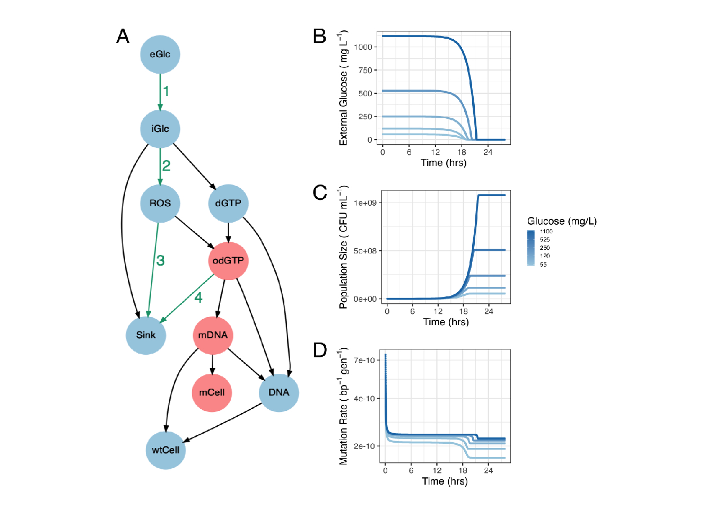

2 Working together to control mutation: how collective peroxide detoxification determines microbial mutation rate plasticity
2.1 Introduction
Uncovering the mechanisms behind environmentally responsive mutagenesis informs our understanding of evolution, notably antimicrobial resistance, where mutation supply can be critical (Gifford et al. 2023; Ragheb et al. 2019). Microbial mutation rates are responsive to a wide variety of environmental factors including population density (Krašovec et al. 2017), temperature (Chu et al. 2018), growth rate (Ram P. Maharjan and Ferenci 2018; Liu and Zhang 2019), stress (MacLean, Torres-Barceló, and Moxon 2013; Foster 2007), growth phase (Loewe, Textor, and Scherer 2003) and nutritional state (Ram P. Maharjan and Ferenci 2017). Such mutation rate plasticity inspires the idea of “anti-evolution drugs”, able to slow the evolution of antimicrobial resistance during the treatment of an infection (Ragheb et al. 2019; Cirz et al. 2005; Domenech et al. 2020; Alam et al. 2016). Even small reductions in the mutation rate (2-5-fold) can have dramatic effects on the capacity of bacterial populations to adapt to antibiotic treatment, particularly when evolution is limited by mutation supply, as is the case for small pathogen populations (Ragheb et al. 2019).
Microbial mutation rates have an inverse association with population density across all domains of life, we have previously shown that 93% of otherwise unexplained variation in published mutation rate estimates is explained by the final population density (Krašovec et al. 2017). This density-associated mutation rate plasticity (DAMP) is a distinct phenotype from stress-induced mutagenesis, which acts via independent genetic mechanisms (Krašovec et al. 2018). Population density alters not only the rate but also the spectrum of mutations, with significantly higher rates of AT>GC transitions seen in low density populations (Gifford et al. 2023). Density effects are likely relevant to natural populations given that population sizes and densities vary greatly, for example, Escherichia coli populations in host faeces can range in density by 5 orders of magnitude (Tenaillon et al. 2010), and infections can be established by populations as small as 6×103 cells (Cornick and Helgerson 2004). We therefore aim to mechanistically describe the widespread phenotype of DAMP.
In order to test potential mechanisms generating DAMP, we developed and systematically assessed a computational model connecting metabolism and mutagenesis in a growing E. coli population. This model generates the hypothesis that the key determinants of DAMP are the production and degradation rates of reactive oxygen species (ROS). Though molecular oxygen is relatively stable it can be reduced to superoxide (•O2−), hydrogen peroxide (H2O2) and hydroxyl radicals (HO•). These “reactive oxygen species” are strong oxidants able to damage multiple biological molecules including nucleotides and DNA (Imlay 2003). We tested the role of ROS in controlling DAMP by estimating mutation rate plasticity under different conditions of environmental oxygen and with genetic manipulations known to alter ROS dynamics. We find that the reduction in mutation rate at increased population density results from the population’s increased ability to degrade H2O2, resulting in reduced ROS-associated mutagenesis. We show that this density effect is also experienced by cells deficient in H2O2 degradation when cocultured with wild-type cells able to detoxify the environment. Mutation rates therefore depend not only on the genotype of the individual but also on the community’s capacity to degrade H2O2.
2.2 Results
2.2.1 Initial computational model of nucleotide metabolism in a growing microbial population fails to reproduce mutation rate plasticity
Attaching package: 'ggpubr'The following object is masked from 'package:plyr':
mutateThe following object is masked from 'package:cowplot':
get_legendLinking to ImageMagick 6.9.12.93
Enabled features: cairo, fontconfig, freetype, heic, lcms, pango, raw, rsvg, webp
Disabled features: fftw, ghostscript, x11
Rows: 10 Columns: 5
── Column specification ────────────────────────────────────────────────────────
Delimiter: ","
chr (5): Variable, Definition, Starting Value, Units, Region
ℹ Use `spec()` to retrieve the full column specification for this data.
ℹ Specify the column types or set `show_col_types = FALSE` to quiet this message.Table 2.1: Definitions and starting values for the 10 variables in ODE model A.
| Variable | Definition | Starting Value | Units | Region |
|---|---|---|---|---|
| eGlc | External glucose | 3.1x10-4 to 6.2x10-3 | M | 1 mL culture |
| iGlc | Internal glucose | 0 | M | Cytoplasm |
| dGTP | Deoxyguanosine triphosphate | 0 | M | Cytoplasm |
| DNA | Guanine nucleotides in thesynthesised strand | 0 | M | Cytoplasm |
| wtCell | Guanine nucleotides in thestrand | 8.5x10-12 | M | 1 mL culture |
| ROS | Reactive oxygen species (H2O2) | 0 | M | Cytoplasm |
| odGTP | 8-oxo-2’-deoxyguanosine | 0 | M | Cytoplasm |
| mDNA | odGTP nucleotides in thesynthesised DNA strand | 0 | M | Cytoplasm |
| mCell | odGTP nucleotides in theDNA strand | 0 | M | 1 mL culture |
| cytVol | Total cytoplasmic volume | 2.25x10-9 | mL | NA |
To generate hypotheses for the mechanisms of density-associated mutation rate plasticity we constructed a system of ordinary differential equations (ODEs) that recapitulates the dynamics of metabolism, growth and mutagenesis in a 1mL batch culture of E. coli Figure fig-one. The enzyme MutT, responsible for degrading mutagenic oxidised GTP (Maki and Sekiguchi 1992), is essential in DAMP (Krašovec et al. 2017); the ODE model is therefore focussed on guanine bases. In the model external glucose (eGlc) is taken up by a small initial E. coli population (wtCell). Internal glucose (iGlc) is then metabolised to produce ROS, dGTP and, largely, ‘other’ molecules (‘Sink’ in Figure fig-one). dGTP is then either integrated into a newly synthesised DNA molecule (DNA) or it reacts with ROS to produce 8-oxo-2’-deoxyguanosine triphosphate (odGTP). In this model, non-oxidised dGTP always pairs correctly with cytosine, producing non-mutant DNA (DNA). In a second round of DNA replication the guanine base is now on the template strand, cytosine is correctly inserted opposite producing new chromosomes (wtCell). odGTP, if it is not dephosphorylated by MutT into dGMP (Sink), can either pair correctly with cytosine (becoming DNA) or mis-pair with adenine (becoming mDNA). When odGTP is inserted opposite adenine into DNA (mDNA) it may be repaired by the MutS or MutY proteins, converting the mDNA back to DNA. The key output of interest is the mutation rate, which is defined as the number of mutant base pairs (mCell) divided by the number of non-mutant base pairs (wtCell). The model comprises 10 ordinary differential equations (ODEs), one for each substance variable in Figure fig-one (excluding ‘Sink’), plus cytVol, the total population cytoplasmic volume within which all the reactions occur (Table tbl-one ,Eq. 1-10, Methods). These equations require 14 parameters (some of them composite, Table 2); the structure and parameter values are largely taken from the existing literature (for details see Methods). Un-measurable parameters (notably the rate of dGTP oxidation to odGTP by ROS, ’O2’) were set to give the observed mutation rate (2 × 10-10 mutations per base pair per generation, (20)) at a final population density of 3 × 108 CFU ml-1, typical of 250 mg L-1 glucose in minimal media. As with most experiments demonstrating density-associated mutation rate plasticity (3, 21), final population density is controlled by varying initial external glucose. We initiated 28h simulations of 1ml cultures with 2175 cells (a small number, typical of fluctuation assays estimating mutation rate, Fig. S10), no internal metabolites and external glucose concentrations relevant to wet-lab experiments – across a log scale from 55 to 1100 mg L-1 (Table 1). The dynamics of external glucose, population size and mutation rate for these simulations are shown in Fig.1B-D.